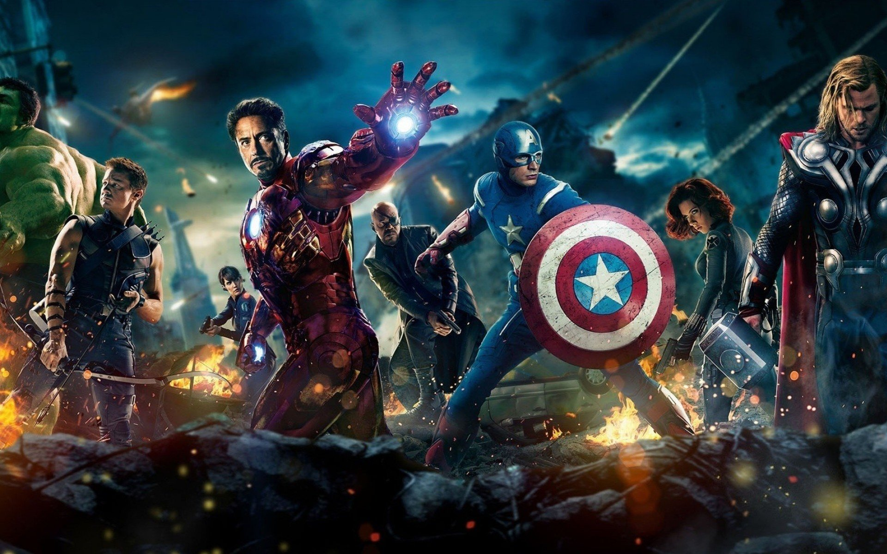
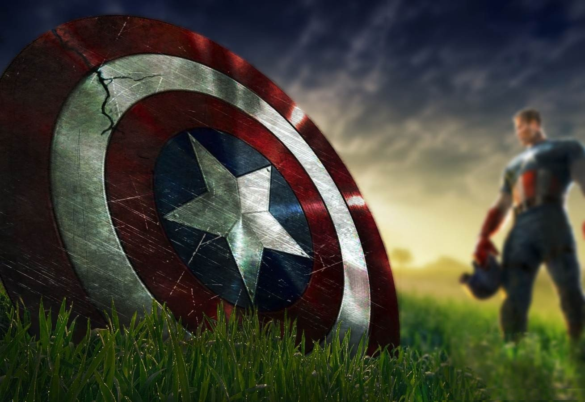

It is 1942, America has entered World War II, and sickly but determined Steve Rogers is frustrated at being rejected yet again for military service. Everything changes when Dr. Erskine recruits him for the secret Project Rebirth. Proving his extraordinary courage, wits and conscience, Rogers undergoes the experiment and his weak body is suddenly enhanced into the maximum human potential. When Dr. Erskine is then immediately assassinated by an agent of Nazi Germany's secret HYDRA research department (headed by Johann Schmidt, a.k.a. the Red Skull), Rogers is left as a unique man who is initially misused as a propaganda mascot; however, when his comrades need him, Rogers goes on a successful adventure that truly makes him Captain America, and his war against Schmidt begins.Steve Rogers fights for American ideals as one of the world’s mightiest heroes and the leader of the Avengers.
Two years after the Battle of New York,[N 1] Steve Rogers works in Washington, D.C., for the espionage agency S.H.I.E.L.D., while adjusting to contemporary society. During a mission alongside Agent Natasha Romanoff and S.H.I.E.L.D.'s counter-terrorism S.T.R.I.K.E. team, led by Agent Brock Rumlow, to free hostages aboard a S.H.I.E.L.D. vessel from pirates led by Georges Batroc, Rogers discovers Romanoff has another agenda: to extract data from the ship's computers. Returning to the Triskelion, S.H.I.E.L.D.'s headquarters, Rogers confronts Director Nick Fury and is briefed about Project Insight: three Helicarriers linked to spy satellites, designed to preemptively eliminate threats. Unable to decrypt Romanoff's data, Fury becomes suspicious about Insight and asks senior S.H.I.E.L.D. official and Secretary of Internal Security Alexander Pierce to delay the project.
In 1991, the brainwashed super-soldier James "Bucky" Barnes is dispatched from a Hydra base in Siberia to intercept an automobile carrying a case of super-soldier serum. In the present day, approximately one year after Ultron is defeated by Avengers in the nation of Sokovia,[N 1] Steve Rogers, Natasha Romanoff, Sam Wilson, and Wanda Maximoff stop Brock Rumlow from stealing a biological weapon from a lab in Lagos. Rumlow blows himself up, attempting to kill Rogers. Maximoff telekinetically diverts the explosion, accidentally destroying a nearby building and killing several Wakandan humanitarian workers in the process.